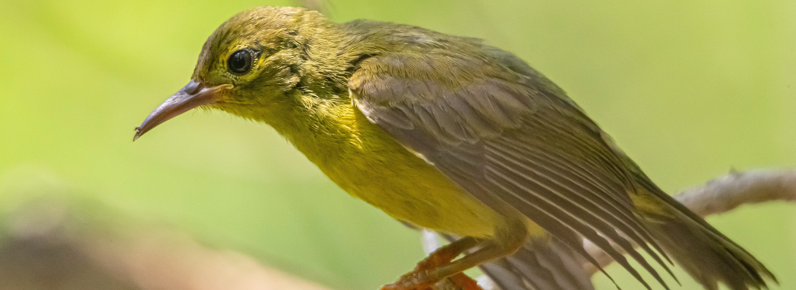

SriLanka is blessed with an abundant avifauna. There are 226 resident birds, 133 migrants, 90 vagrants and 33 endemics (26 definite and 7 proposed). Ranweli is located in a coast wetland estuary and this contributes to a large diversity of over 13 species of birds. Bird watching on the river and mangroves by boat is offered as a special facility to our guests. A three-hour tour has been developed with the assistance of the Field Ornithology Group of Sri Lanka (FOGSL), an affiliate ofBird Life International (an international bird conservation organization).
Key Facts
- - Accompanied by an expert ornithologist
- - Duration: 3 hours, commencing at 07:00hrs. (Breakfast during tour)
- - Rates: US$ 30 per person; minimum 2 persons per tour
- - Reservations in advance at the reception